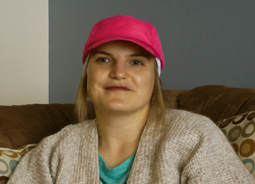

Understanding the diagnosis
Understanding the diagnosisAmanda

Age: 32 years old
Time since first diagnosis: recently diagnosed
Her background:
Amanda (32 years old) lives in an Atlantic province with her partner. Amanda works as a human resource manager in a health care setting but is currently on long term disability.
Amanda was diagnosed in 2014 and was about to undergo her third chemotherapy session at the time of the interview. Less than 6 months ago Amanda felt a lump in her right breast and instinctively felt that this wasn’t right. After a waiting period of 3-4 weeks, she underwent several tests (ultrasound, mammogram and biopsy) and then met the family doctor who gave her the diagnosis – all within the same week. During this turbulent period she realized that she might lose her fertility during chemotherapy. Before the start of her chemotherapy, she saw a fertility specialist and started a treatment for egg freezing for which she had to travel to Ottawa (just after her surgery) for an expensive procedure. Fortunately, the costs for the procedure were later covered thanks to a fund raising campaign “the Ultimate Egg Hunt” organized by her local triathlon club, friends and family. She also started on an Lupron before the chemotherapy which may increase her chances to preserve fertility. Amanda had completed 2 chemotherapies at the time of the interview and she explained how she felt about losing her hair, changes to her diet and coping with the treatments as well as the great support she receives from her friends and family. Amanda kept a blog during her chemotherapy which can be found at https://chemochroniclesofamanda.wordpress.com